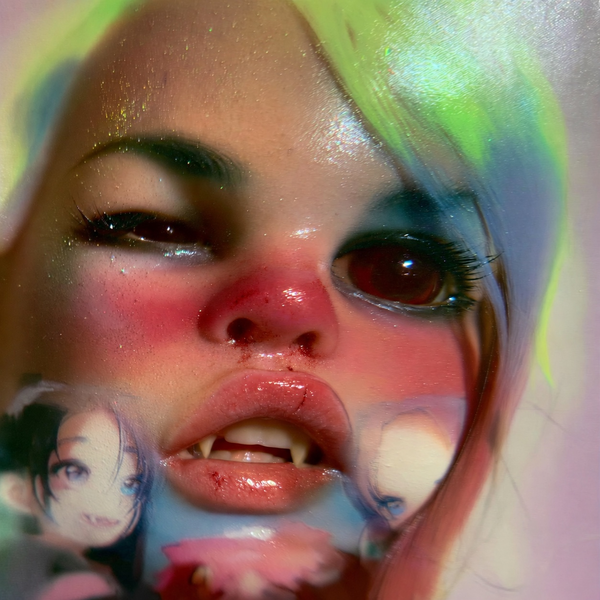

Jan 22, 2027 2027.01.22 22 de enero de 2027 2027.01.22 22.01.2027 22 janv. 2027

It opens with HUMANO, a switch of the senses flipping between Spanish and English; HIGH LIFE and KNOCK ME OUT carry blunt talk about her own desires and a sharp attitude straight over club sound. BRATTY TEEN DAUGHTER throws in the shameless humour of shrugging off other people’s eyes and analysis, and the closing title track, GOTTA FIX MY BANGS, lightly shakes off twenty-five years of mileage and impatience.
Even if the bangs never end up perfect, the moment she steps out the door hesitation turns into confidence. GOTTA FIX MY BANGS is the clearest record yet of who NECTA is right now: raw, lippy energy instead of neatness. 외출을 5분 남기고 거울 앞에서 가위로 앞머리를 다듬는 짧은 시간. NECTA의 새 EP 「GOTTA FIX MY BANGS」는 그 사소하고 개인적인 의식을 출발점으로 삼아, 불완전함을 숨기기보다 오히려 무기로 밀고 나가는 다섯 곡의 일렉트로니카 팝이다.
스페인어와 영어를 오가며 감각의 스위치를 켜는 오프닝 〈HUMANO〉에서 시작해, 〈HIGH LIFE〉와 〈KNOCK ME OUT〉에서는 자신의 욕망을 숨기지 않는 직설적인 화법과 날 선 태도가 클럽 사운드 위에 그대로 실린다. 이어지는 〈BRATTY TEEN DAUGHTER〉는 타인의 시선과 분석을 가볍게 밀어내는 뻔뻔한 유머를 던지고, 마지막 타이틀곡 〈GOTTA FIX MY BANGS〉는 25년간의 궤적과 조급함마저 가볍게 털어낸다.
앞머리를 완벽하게 고치지 못했더라도 결국 문 밖으로 나서는 순간, 주저함은 자신감으로 바뀐다. 「GOTTA FIX MY BANGS」는 단정함 대신 삐죽거리는 날것의 에너지를 택한 지금의 NECTA를 가장 선명하게 보여주는 기록이다. Cinco minutos antes de salir, unas tijeras y el espejo. El nuevo EP de NECTA, GOTTA FIX MY BANGS, toma ese pequeño ritual privado como punto de partida: cinco canciones de pop electrónico que empujan la imperfección hacia adelante como un arma en vez de esconderla.
Abre con HUMANO, un interruptor de los sentidos que alterna entre el español y el inglés; en HIGH LIFE y KNOCK ME OUT, la forma directa de hablar de sus propios deseos y una actitud afilada se suben tal cual al sonido de club. BRATTY TEEN DAUGHTER lanza el humor descarado de apartar la mirada y el análisis ajenos, y el tema que cierra, GOTTA FIX MY BANGS, se sacude con ligereza veinticinco años de recorrido y prisa.
Aunque el flequillo no quede perfecto, en el momento de salir por la puerta la duda se convierte en confianza. GOTTA FIX MY BANGS es el registro más nítido de quién es NECTA ahora: energía cruda y respondona en lugar de pulcritud. 出かける5分前、鏡の前でハサミを手に前髪を整える、その短い時間。NECTAの新作EP『GOTTA FIX MY BANGS』は、そのささやかで個人的な儀式を出発点に、不完全さを隠すのではなく武器として押し出す5曲のエレクトロニカ・ポップだ。
スペイン語と英語を行き来しながら感覚のスイッチを入れるオープニング「HUMANO」から始まり、「HIGH LIFE」「KNOCK ME OUT」では自分の欲望を隠さない直球の言葉と鋭い態度がクラブ・サウンドの上にそのまま乗る。続く「BRATTY TEEN DAUGHTER」は他人の視線や分析を軽く押し返す厚かましいユーモアを投げ、最後のタイトル曲「GOTTA FIX MY BANGS」は25年間の軌跡と焦りさえも軽く振り払う。
前髪を完璧に直せなくても、結局ドアを出るその瞬間、ためらいは自信に変わる。『GOTTA FIX MY BANGS』は、整った姿ではなく、とがった生のエネルギーを選んだ今のNECTAを最も鮮明に映す記録だ。 Fünf Minuten vor dem Losgehen, eine Schere und der Spiegel. NECTAs neue EP GOTTA FIX MY BANGS nimmt dieses kleine, private Ritual zum Ausgangspunkt: fünf Stücke Elektronik-Pop, die Unvollkommenheit nicht verstecken, sondern als Waffe nach vorn schieben.
Sie beginnt mit HUMANO, einem Umschalten der Sinne zwischen Spanisch und Englisch; HIGH LIFE und KNOCK ME OUT tragen direkte Rede über ihre eigenen Begierden und eine scharfe Haltung direkt über den Club-Sound. BRATTY TEEN DAUGHTER wirft den frechen Humor hinterher, der fremde Blicke und Analysen beiseiteschiebt, und der abschließende Titeltrack GOTTA FIX MY BANGS schüttelt fünfundzwanzig Jahre Weg und Ungeduld leicht ab.
Auch wenn der Pony am Ende nicht perfekt sitzt: In dem Moment, in dem sie zur Tür hinausgeht, wird Zögern zu Selbstsicherheit. GOTTA FIX MY BANGS ist die bisher klarste Aufnahme davon, wer NECTA gerade ist — rohe, vorlaute Energie statt Ordentlichkeit. Cinq minutes avant de sortir, des ciseaux et le miroir. Le nouvel EP de NECTA, GOTTA FIX MY BANGS, prend ce petit rituel intime comme point de départ : cinq titres d’électro-pop qui poussent l’imperfection en avant comme une arme plutôt que de la cacher.
Il s’ouvre avec HUMANO, un interrupteur des sens qui bascule entre l’espagnol et l’anglais ; sur HIGH LIFE et KNOCK ME OUT, la parole directe sur ses propres désirs et une attitude acérée passent telles quelles sur le son de club. BRATTY TEEN DAUGHTER lance l’humour effronté qui repousse les regards et les analyses des autres, et le morceau-titre final, GOTTA FIX MY BANGS, secoue légèrement vingt-cinq ans de route et d’impatience.
Même si la frange n’est jamais parfaite, au moment de franchir la porte l’hésitation devient de l’assurance. GOTTA FIX MY BANGS est le document le plus net de ce que NECTA est aujourd’hui : une énergie brute et insolente plutôt que du bon ordre.


2027 NECTA PROFILE (6 hi-res · ZIP)
NECTA is a Seoul-based electronica singer-songwriter. Starting from R&B, she has widened her field into Seoul’s club scene and electronic music while building her own sound and visual world — and more recently she has also been writing for K-pop.
Nominated for Best Electronic Album and Best Song at the 23rd Korean Music Awards for her 2025 EP Seoul Bizarre, she released her first full-length album GIRLHOOD in 2026 and was named an Apple Music ‘Up Next’ artist, drawing the scene’s attention. On January 22, 2027 she opens the next chapter with the new EP GOTTA FIX MY BANGS.
NECTA(넥타)는 서울을 기반으로 활동하는 일렉트로니카 싱어송라이터다. R&B에서 출발해 서울의 클럽 씬과 전자음악으로 영역을 넓히며 자신만의 사운드와 비주얼을 구축해 왔고, 최근에는 K-POP 송라이팅 작업도 함께 이어가고 있다.
2025년 EP 「Seoul Bizarre」로 제23회 한국대중음악상 최우수 일렉트로닉 음반·노래 부문 후보에 올랐고, 2026년 첫 정규 앨범 「GIRLHOOD」와 Apple Music ‘Up Next’ 선정을 거치며 씬의 주목을 받았다. 2027년 1월 22일, 새 EP 「GOTTA FIX MY BANGS」로 다음 챕터를 연다.
NECTA es una cantautora de electrónica radicada en Seúl. Partió del R&B y amplió su terreno hacia la escena de club y la música electrónica de Seúl mientras construía su propio sonido y universo visual; más recientemente también escribe para K-pop.
Nominada al Mejor Álbum Electrónico y a la Mejor Canción en los 23.º Korean Music Awards por su EP Seoul Bizarre (2025), publicó en 2026 su primer álbum de larga duración, GIRLHOOD, y fue elegida artista «Up Next» de Apple Music, captando la atención de la escena. El 22 de enero de 2027 abre el siguiente capítulo con el nuevo EP GOTTA FIX MY BANGS.
NECTAは、ソウルを拠点に活動するエレクトロニカ・シンガーソングライター。R&Bから出発し、ソウルのクラブ・シーンとエレクトロニック・ミュージックへと活動の幅を広げ、自身のサウンドとビジュアルを築いてきた。近年はK-POPのソングライティングも手がけている。
2025年のEP『Seoul Bizarre』で第23回 韓国大衆音楽賞の最優秀エレクトロニック・アルバム賞・楽曲賞にノミネート。2026年には初のフルアルバム『GIRLHOOD』を発表し、Apple Music「Up Next」に選出されるなど、シーンの注目を集めた。2027年1月22日、新EP『GOTTA FIX MY BANGS』で次の章を開く。
NECTA ist eine in Seoul lebende elektronische Singer-Songwriterin. Sie kommt aus dem R&B, hat ihr Feld auf die Clubszene und die elektronische Musik Seouls ausgeweitet und dabei einen eigenen Sound und eine eigene visuelle Welt aufgebaut; zuletzt schreibt sie auch für K-Pop.
Für ihre EP Seoul Bizarre (2025) wurde sie bei den 23. Korean Music Awards als bestes elektronisches Album und bester Song nominiert; 2026 folgten ihr erstes Album GIRLHOOD und die Aufnahme in Apple Musics „Up Next“, die ihr die Aufmerksamkeit der Szene einbrachte. Am 22. Januar 2027 eröffnet sie mit der neuen EP GOTTA FIX MY BANGS das nächste Kapitel.
NECTA est une autrice-compositrice-interprète électronique basée à Séoul. Partie du R&B, elle a élargi son terrain vers la scène club et la musique électronique de Séoul tout en construisant son propre son et son univers visuel ; plus récemment, elle écrit aussi pour la K-pop.
Nommée au Meilleur album électronique et à la Meilleure chanson aux 23es Korean Music Awards pour son EP Seoul Bizarre (2025), elle a publié en 2026 son premier album, GIRLHOOD, et a été retenue parmi les artistes « Up Next » d’Apple Music, attirant l’attention de la scène. Le 22 janvier 2027, elle ouvre le chapitre suivant avec le nouvel EP GOTTA FIX MY BANGS.